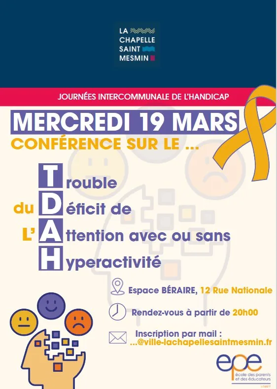
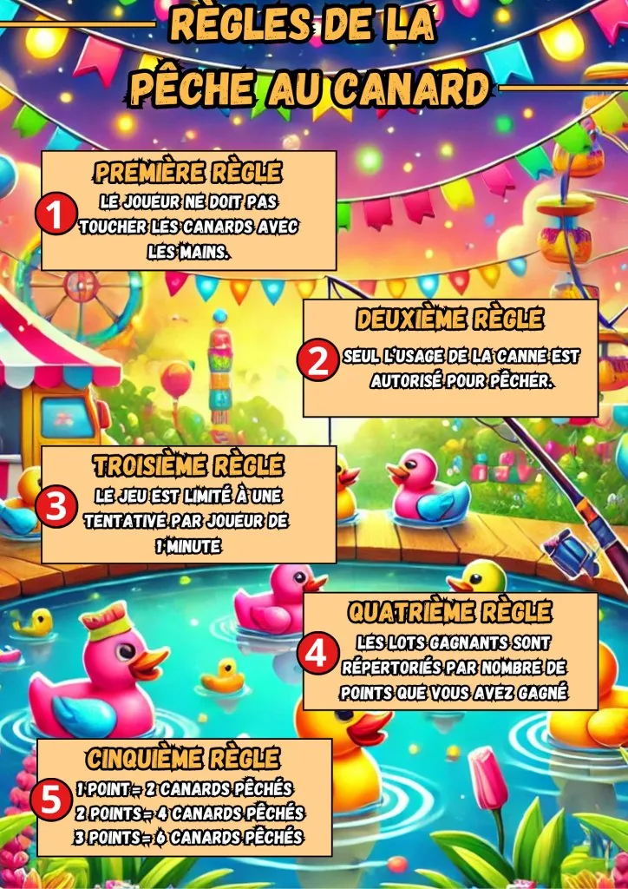
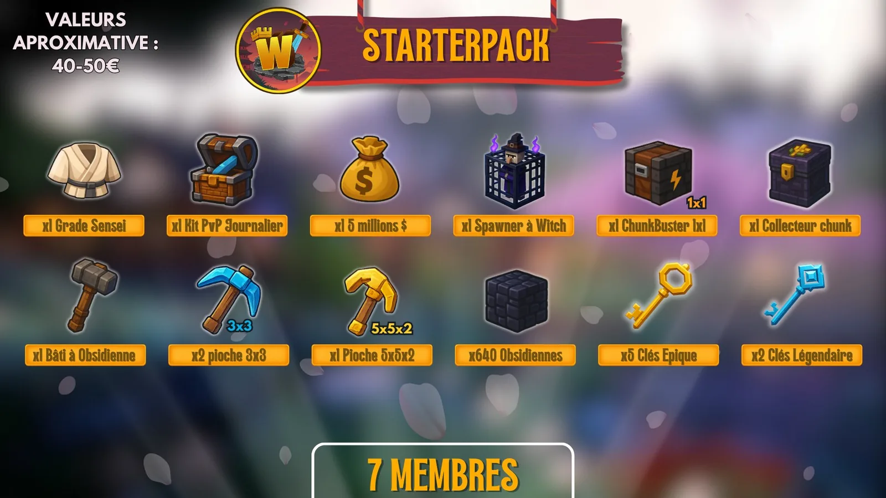

YohannDa Fonseca
Je rends l’information claire. Et quand l’outil n’existe pas, je le construis.
Disponible à partir de janvier 2027
- Postes
- Communication, RH et administration, assistant de projet
- Contrat
- CDD ou CDI, temps plein
- Zone
- Orléans et jusqu’à 1 h de route, véhiculé
- Formation
- BTS Communication

Affiche, La Chapelle-Saint-Mesmin Affiche de concours, Winzoria
Affiche de concours, Winzoria Publications de lancement, Mobilitaf
Publications de lancement, Mobilitaf Affiche, La Chapelle-Saint-Mesmin
Affiche, La Chapelle-Saint-Mesmin Bannière de wiki, Winzoria
Bannière de wiki, Winzoria
Panneau de stand, La Chapelle-Saint-Mesmin Visuels boutique, Winzoria
Visuels boutique, Winzoria
Affiche d’offre, Winzoria Panneau de stand, La Chapelle-Saint-Mesmin
Panneau de stand, La Chapelle-Saint-Mesmin
À la une
Le projet qui résume le mieux ce que je fais.
Ville de Saint-Jean-de-la-Ruelle, 2026
Une plateforme de recrutement pour une ville de 340 agents
En poste au service RH, j’ai conçu et mis en ligne l’outil complet : offres en ligne, candidature sans compte, suivi des candidatures, export pour les RH.
Voir le projet
Tester la démo Espace candidat et espace RH, données fictives.
Projets
Chaque projet commence par la question qu’on m’a posée, ou que je me suis posée.
En milieu professionnel
- 2026Saint-Jean-de-la-RuelleRendre l’information RH lisible pour les 340 agents d’une ville.CDD, 6 moisUne plateforme de recrutement en ligne
- 2025MobilitafLancer un livre et sa campagne Ulule avec des comptes créés de zéro.Stage, 5 semaines2 266 impressions LinkedIn
- 2025PEP’s ExtraFaire inscrire des extras sur une plateforme de recrutement, sans budget publicitaire.Stage, 6 semaines69 inscriptions
- 2025La Chapelle-Saint-MesminProduire les supports réels d’une mairie, sous charte et sous délai.Stage, 4 semaines8+ supports diffusés
De ma propre initiative
- 2025–2026ElyosConstruire une marque de A à Z, puis la faire pivoter vers une application.CofondateurPrototype fonctionnel
- Depuis 2025YohannLifestyleConstruire une audience avec une ligne éditoriale tenue, et la mesurer.Création de contenu1,6 M de vues en un an
- 2025WinzoriaFaire ouvrir un serveur de jeu avec une communauté déjà active.Mission bénévole400+ membres
Savoir-faire
Ce que je sais déjà faire, et où le vérifier.
Lancer quelque chose qui n’existait pas
Écrire pour un public précis, et changer de ton
Créer des visuels dans le cadre d’une charte
Mesurer, comprendre, ajuster
Organiser l’information pour qu’on s’y retrouve
Communiquer en interne
Tenir une ligne éditoriale dans la durée
Ce que je peux prendre en charge
Dès les premières semaines, en autonomie ou en appui.
Réseaux sociaux
Ligne éditoriale, calendrier, création des contenus, modération, lecture des statistiques.
Supports visuels et print
Affiches, brochures, livrets, visuels de campagne, toujours dans la charte existante.
Communication interne
Supports d’accueil et d’intégration, présentations, informations RH rendues lisibles.
Lancement d’un projet
Landing page, capture de contacts, fichier presse, campagne de financement, calendrier de lancement.
Gestion administrative et RH
Suivi des candidatures et des formations, dossiers agents, courriers, tableaux de suivi, logiciels Ciril et Inser.
Outils et prototypes
Formulaires, automatisations, prototypes d’applications internes pour remplacer un tableur ou une boîte mail.
Événementiel
Identité d’un événement, organisation, logistique, supports sur place.
Profil
21 ans, basé près d’Orléans.
Je m’intéresse autant à la logique d’un message qu’à son apparence. Un bon support, pour moi, c’est celui qu’on comprend sans qu’on ait à l’expliquer.
Mon parcours m’a fait travailler pour des publics très différents : des habitants et des agents de collectivité, des extras de la restauration, des entrepreneurs, des joueurs en ligne. À chaque fois, la même méthode : comprendre à qui l’on parle, décider de ce qu’on veut qu’il retienne, puis soigner l’exécution et regarder ce que ça donne.
Depuis juillet 2026, je travaille au Pôle RH d’une ville de 340 agents. J’y ai découvert un second métier : le suivi administratif du personnel, et le plaisir de rendre un service plus simple à faire tourner.
À côté, je construis mes propres projets : une marque devenue application, et une audience sur TikTok. C’est là que j’apprends le plus vite, parce que personne ne valide à ma place.
- Outils
- Illustrator, Photoshop, Canva, Premiere Pro, CapCut, Meta Business Suite, Notion, Excel et Google Sheets, Systeme.io, Genially
- Logiciels RH
- Ciril, Inser
- Langues
- Français courant, anglais B1, espagnol A2
- Mobilité
- Permis B, véhiculé
- BTS CommunicationLycée Saint-Paul Bourdon Blanc, Orléans
- Baccalauréat STMG, Gestion et FinanceLycée Saint-Paul Bourdon Blanc, Orléans
Contact
Pour un poste en communication, en RH ou en gestion de projet.
06 64 47 49 09 LinkedIn Instagram Orléans et alentours